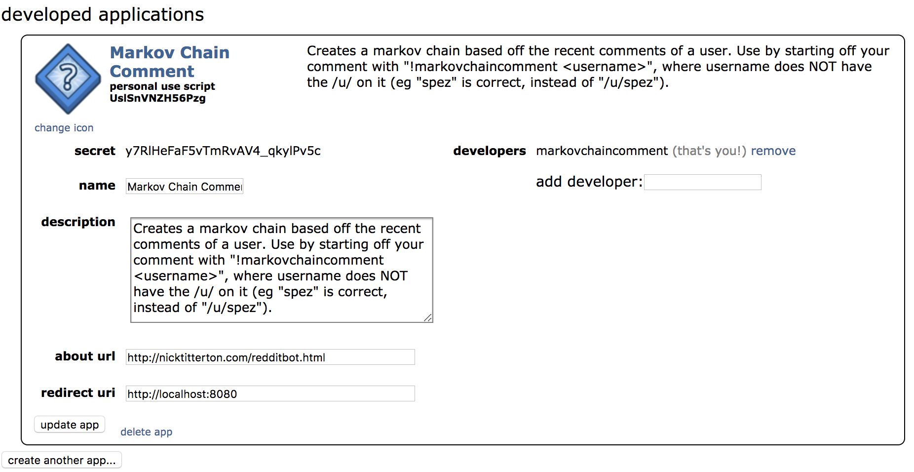
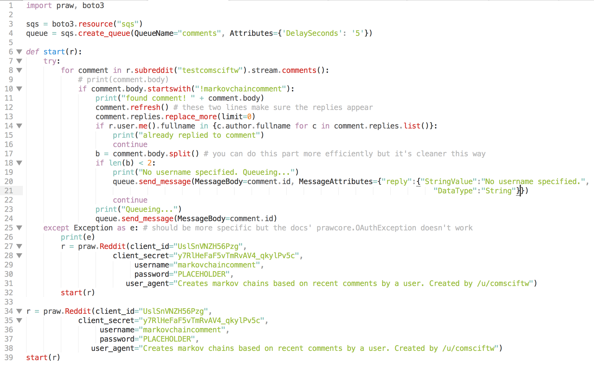
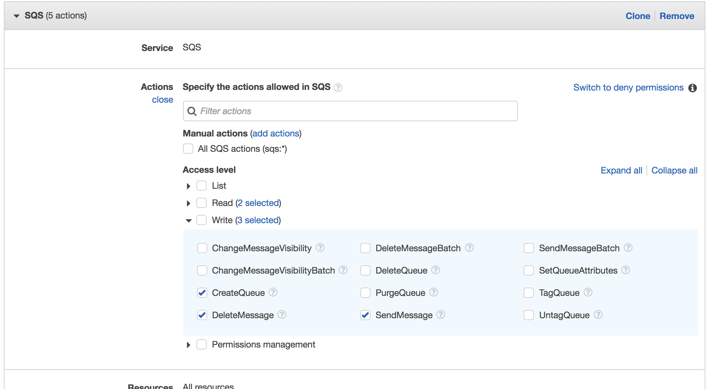
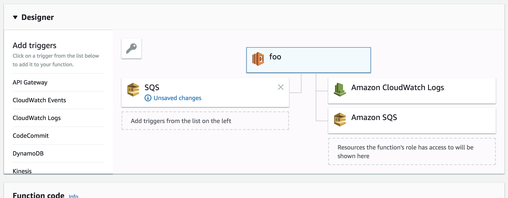
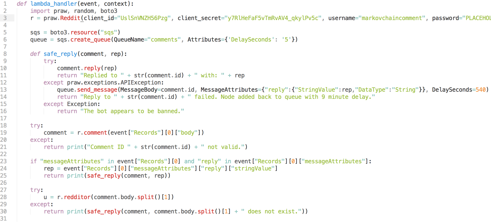
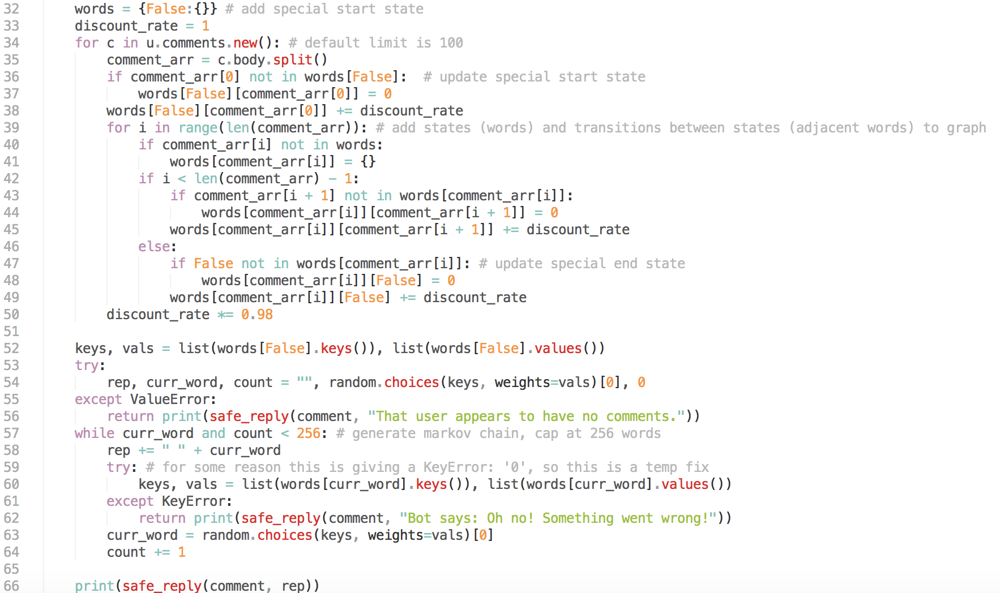
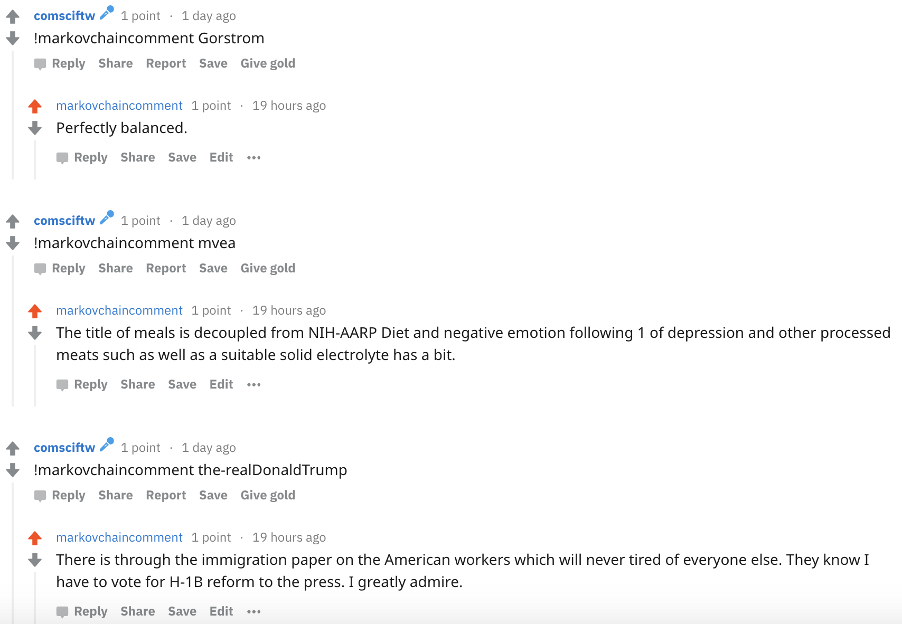
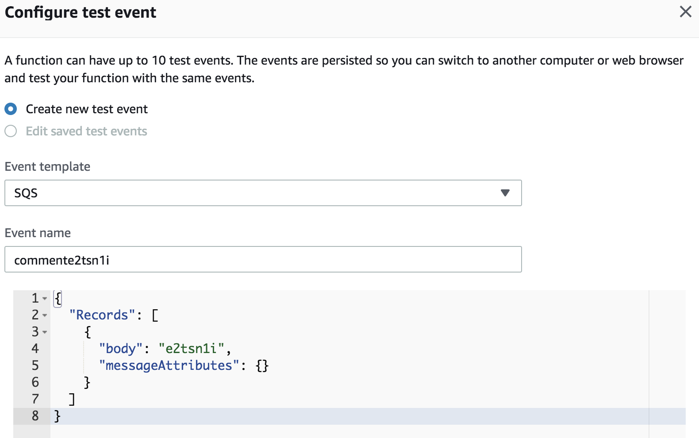

I've always enjoyed seeing the various functions bots perform on reddit, so I decided to make my own. I used PRAW (Python Reddit API Wrapper) running on an AWS EC2 instance to find comments that begin with "!markovchaincomment", then add the comment ID to an AWS SQS queue, then pull from that queue with an AWS Lambda function that creates a markov chain based off the specified user's recent comments and also write out some logs to AWS CloudWatch.
Code can be found in this github repo
After logging in to a reddit account, navigate to https://old.reddit.com/prefs/apps/ and select "create an app" (or something similar). Then fill out the fields how you wish, putting "http://localhost:8080" in the redirect url. 
Assuming you have python installed, the first step is to install PRAW: Python Reddit API Wrapper, an open source effort to make Reddit's API more accessible. Both pip install praw for pip or conda install praw for Anaconda will work fine. Important PRAW docs to read include The Reddit Instance, Comment, and Redditor. The docs aren't too thorough: for example, comment.body and comment.id are not mentioned.
Next, you will need to install the AWS Command Line Interface. Use pip install awscli, then type aws configure to connect your local CLI to your AWS account. You can find your credentials (assuming you are root and not an IAM user) from the online AWS Console with Name->My Security Credentials->Access keys. This will install boto3, which we will need to interact with AWS SQS. Make sure you do all of these actions (the EC2 instance, the SQS queue, and the Lambda function) on the same datacenter (in my case us-west-1).
At this point, you may be wondering why we do not just use EC2 to run the bot and leave it at that. Why include SQS and Lambda? For basic call and response bots like this one, the bot is idle for most of the time, then very busy when a call is made. Since you don't want to miss any calls to the bot (availability), want to respond quickly (latency), possibly handle many calls at once (scalability), and not have to alocate an expensive ec2 instance to handle these spikes (affordability), it is vastly superior to hand off the compute-intensive part to an AWS Lambda function once a comment is found. The code for our markov chain bot is shown below.  Most of this is self-explanatory. At the start we import PRAW and boto3 and create/get an SQS comment queue. We have to login with a call to praw.Reddit(), where we use fields from the earlier app preferences. This times after 1 hour, so we have to except an error when this happens and re-login. Once logged in, scan through a stream of new comments to a subreddit. If a comment starts with the command, we open the replies and make sure we haven't already replied, and that the caller provided a user to mimic with a markov chain. Once we confirm this, we add that comment id to the SQS queue.
To run this with EC2, spin up an instance (I used a t2.nano since it is free-tier eligible) and ssh in. scp up your comment scraper file. Install PRAW and AWS CLI again. Then type tmux, run your python script, and use Control+b then d to exit tmux. You can then type logout and voila! Your python script will run indefinitely on that little instance.
Our lambda function will receive messages from the SQS queue, do some computation to create a markov chain, then reply back to that comment.
Before creating the lambda function, since we'll be using custom permissions (explanation why later), create a new execution role by navigating to Name->My Security Credentials->Roles, click "Create role", select Lambda for the service that is using this role, then check "AWSLambdaSQSExecutionRole" for permissions and finish creating the role. After this, we need to also allow the lambda function to access to createQueue and sendMessage in SQS, so after the role is created, click on it, expand the first policy, click "Edit policy", then expand SQS and click the pencil next to Actions. Add the two mentioned permissions (createQueue and sendMessage) and save the changes. Now this role has the ability to write to Cloudwatch logs, get the queue with boto3, and send, receive, and delete from the queue.  After you have done this, go back into AWS Console homepage and open up SQS. If you've already run the comment scraper script once, you'll have one queue already created. Check the queue's box, click the permissions tab, and give yourself (root) all permissions.
We have to add the two additional permissions to the execution role so that if reddit stops our bot from commenting by forcing it to wait 9 minutes, we can put a node back into the queue (if we try to comment and are banned from the subreddit, there is nothing we can do; besides these two scenarios our comment should always go through).
Once you are in your function, you should see a GUI that already has a flowchart of Lambda -> Cloudwatch, SQS already set up. To add a trigger, scroll the the trigger list on the left and select "SQS". Select your queue from earlier, set batch size to 1, and uncheck enable trigger (it will be enabled once testing is finished).  After doing any action make sure to save changes to your lambda function in the top right. Now click on your lambda function and scroll to the bottom. There you will see various parameters you can tune, like memory, timeout, and concurrency. For example, I bumped memory to 256MB and timeout to 30 seconds.
Now for the actual lambda function. Although this will look different depending on what you want to do, the first half is similar: import PRAW (boto3 is automatically installed and imported) and anything else you need, get your SQS queue, and extract some information from event (which is where the data from sent SQS node is).

In the second half, the bot scans the users most recent 100 comments and creates a weighted graph that will represent transition probabilities between words (states/vertices). Then it performs a random walk in the graph, stopping if it hits the terminal state. This is a simple implementation of a markov chain; if you want to read more, UC Berkeley's CS 70 has a great note on the topic.  And that's it for the coding portion of the bot!
There is one last thing to do though. If you were to copy and paste this code into Amazon's inline editor, it would error on the imports: imported packages have to be in the same folder as the lambda function. This means you have to install praw into a specific folder, add the lambda function python file into that folder, then zip the contents of the folder (but not the folder itself) and upload it. The process is described in this AWS Documentation page. PRAW and the lambda function file comes out to only 1.2MB.
You can first verify that your code works by putting both main part of the lambda function and the comment scraper in one script and running it locally (after you've installed PRAW). I created a test subreddit to do my testing in, and some of the bugs/iterations of the script are evidenced by the replies.  After you do this, start by making sure the comment scraper successfully sends messages to the SQS queue. You can do this by right-clicking the queue in the SQS console and selecting "View/Delete Messages".
After verifying that the comment scraper works, it is time to test if you have plugged everything together in the lambda function! You can do this by clicking the "configure test events" in the top right of the lambda function dashboard, find the id of a comment, and modify the default SQS template like so (it might look different depending on the intended use of the bot):  If everything goes well, you are ready to deploy! Congratulations! You now have a versatile and cheap way to run a reddit bot! You can check the (non-reddit) output of lambda function in the attached cloud output logs, as well as monitoring statistics in the function's dashboard
With this setup, I can run a reddit bot for free: running a t2.nano on EC2 just barely fits into the free tier for AWS Accounts, and 1 million free lambda calls a month should be plenty. Even if I was paying for the t2.nano, it would only ammount to 5 USD a year, which is much less than if I had to alocate a larger instance.
The bot is quite fast too, except one thing: calling comment.refresh() to verify that the bot hasn't already replied to a comment is *really* expensive. Logging in is expensive too, but since we can split off as many lambda instances as we want, there is no worry, while time on comment scraper is more precious. Googling around, this seems to not be PRAW's fault, but oh well.